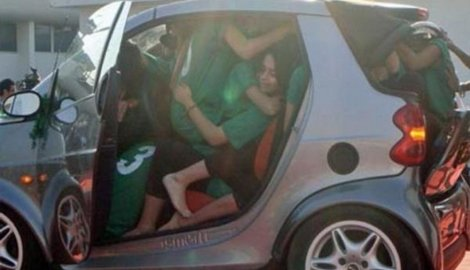
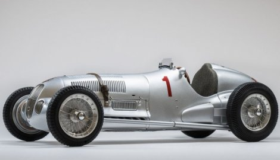
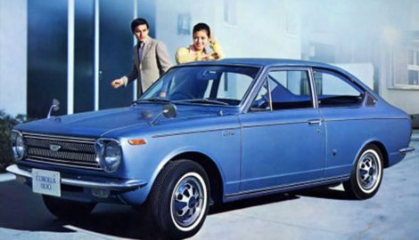

TOP 10 zanimljivosti o automobilima
Najosnovnije, važne ili one manje važne informacije o automobilima i saobraćaju uglavnom znamo iz svakodnevnog života ili sa interneta ali ovo su 10 zanimljivosti koje verovatno nismo mogli ni da pretpostavimo...
1. Najstariji auto koji je do danas očuvan - 1884. De Dion Bouton – “La Marquise”, nedavno je prodat za 4.600.000 dolara.
2. Koliko ljudi staje u Smart for two? - Pakistanci su 2010. godine postavili rekord, čak 19 osoba se naguralo u smarta.

3. Popularni Volkswagenovi automobili Passat, Polo i Jetta nazive su dobili po nazivima vetrova, a modeli Seata su dobili imena po španskim gradovima.
4. U Južnoafričkoj republici, na BMW automobile montiraju bacače plamena zbog čestih pokušaja krađe.
5. Rekord na nemačkom autoputu je zabeležen davne 1938.godine, iznosi neverovatnih 432 kilometara na čas, a u pitanju je Mercedes-Benz W125.

6. Svaki četvrti automobil na svetu je proizveden u Kini.
7. Najprodavaniji automobil u istoriji je Toyota Corolla. Od početka proizvodnje 1966. prodata je u više od 40 miliona primeraka.

8. U nesreći koja se desila u SAD, 1902. godine auto koji se kretao prebrzo udario je konjska kola na kojem su bila dva čoveka. Zbog ovog incidenta došlo je do prvog uvođenja ograničenja brzine u istoriji.
9. Najveća kazna za brzu vožnju ikada, izrečena je u Švajcarskoj i iznosila je milion dolara. Vozač je vozio preko 280 km/h.
10. Čudno ili ne? Obavezno je da pre nego što upalite automobil u Danskoj pogledate da li se neko slučajno nalazi ispod njega.